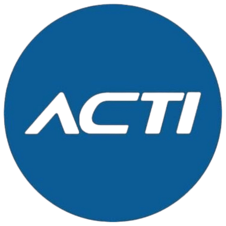

Empresas Impulsoras
Empresas Aliadas



Formación 100% gratuita de 5 semanas para dominar testing automatizado full-stack: web, API, móvil, performance y security, integrado en CI/CD con herramientas profesionales.
Una iniciativa que busca cerrar la brecha digital, impulsar la productividad y generar empleabilidad en Chile
Todo lo que obtienes al ser parte del programa
Acceso sin costo a formación de alto nivel
Aprendizaje práctico e iterativo con proyectos reales en cada unidad
Valida tus nuevas competencias digitales
Acceso a comunidad de profesionales y expertos
Participa en desafíos de innovación
Para mujeres, cesantes, +45 años, estudiantes TP, emprendedores y pymes
Fecha de inicio: Noviembre - Diciembre 2025
Fecha de término: Diciembre - Enero 2025 (aprox.)
Duración: 5 semanas
Modalidad: E-learning 100% asincrónico, online
Bienvenida / Kickoff: Instancia sincrónica de orientación al inicio del curso
Programa profesional que lleva a la persona participante desde los fundamentos del testing hasta la entrega de un proyecto integral listo para producción. El aprendizaje es práctico e iterativo: cada unidad agrega funcionalidades reales a un repositorio vivo que cubre Web, API, móvil, performance y seguridad, integrado en CI/CD en la nube. Herramientas de uso extendido como Cypress, Selenium, Playwright, Postman, Appium, Docker, GitHub Actions/GitLab CI y Grafana se utilizan durante todo el itinerario.
Objetivo del curso:
Dominar de punta a punta la ingeniería de calidad: estrategia, automatización full-stack, pruebas no funcionales, observabilidad y liderazgo en entornos DevOps, comunicando valor al negocio y a los stakeholders.
Lógica básica, Git/GitHub, Git Flow, linters y katas con PR
Principios QA, pirámide/cuadrantes, análisis de riesgo, métricas y OKRs
Entorno local, Docker, gestión de dependencias, smoke tests iniciales
OOP/SOLID, Page Object Model, utilidades y reusabilidad
Intercept/mocks, fixtures, pruebas de componentes, reportería Allure
Selectores robustos, Selenium Grid, ejecución paralela
Postman/Newman, contratos OpenAPI, SuperTest/REST
Gherkin, step definitions reutilizables, integración en CI
Appium 2, emuladores/simuladores, orquestación en nube
Performance (JMeter/k6), Security (OWASP ZAP), auditorías
Pipelines GitHub/GitLab, matrices de ejecución, grids en nube
Dashboards Allure/Grafana, flake rate, cobertura de escenarios
Generación asistida de tests, visual testing, Pact/contract testing
Comunicación con stakeholders, priorización, facilitación ágil
Diseño de estrategia, suites Web/API/Móvil, NFRs en CI/CD, demo final
Fechas clave para tu participación en NODO
Inicio de Convocatoria
Completa tu postulación en línea
Selección de Becados
Recibe confirmación por email
Inicio Curso
Bienvenida obligatoria (por confirmar)
Finalización del Programa
Entrega de proyecto final y certificación
Asegúrate de cumplir con estos requisitos antes de postular al programa
Resuelve tus dudas sobre el programa NODO
Es 100% gratuito. El programa ofrece becas completas gracias al apoyo de empresas e instituciones comprometidas con el desarrollo digital de Chile.
Sí, necesitas conocimientos intermedios en JavaScript, Java o Python, además de HTML, CSS y Git básicos. También es importante tener familiaridad con el SDLC e inglés técnico.
El programa es 100% asincrónico y dura 5 semanas. Se recomienda dedicar entre 8-10 horas semanales para completar el contenido, los proyectos prácticos y las evaluaciones.
Sí, recibirás certificación reconocida al cumplir con los requisitos de participación y aprobar las evaluaciones del programa.
Sí, contarás con tutores, comunidad de aprendizaje y canales de soporte técnico durante todo el programa.
Desarrollarás un proyecto integral de testing automatizado que cubre pruebas web, API, móvil, performance y seguridad, todo integrado en CI/CD y listo para producción.
Completa el formulario y nos contactaremos contigo a la brevedad. Al enviar tu postulación, aceptas nuestros términos y condiciones y el uso de tus datos para fines administrativos del programa.
Si tienes dudas sobre el proceso de postulación, contáctanos:
contacto@somosnodo.cl